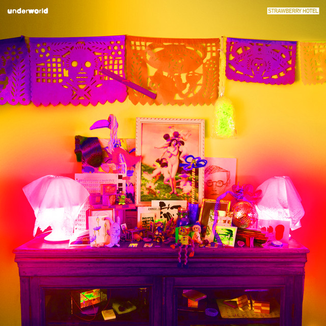

Underworld - Strawberry Hotel



Información del álbum facilitada por discogs.com:
Fecha de lanzamiento: 2024
Géneros: Electronic
Estilos: Techno, House, Ambient
Pais: US
Votos: Media de 3.94 con 16 votos
Sello: Elektra
Manufactured By: Columbia House
Phonographic Copyright (p): Elektra/Asylum Records
Copyright (c): Elektra/Asylum Records
Made By: WEA Manufacturing Inc.
Pressed By: Specialty Records Corporation
Glass Mastered At: Specialty Records Corporation
Art Direction - Bob Defrin
Design - Lynn Dreese Breslin
Illustration - Linda Fennimore
Mastered By - Dennis King
Producer - David Gates
Producer [Associate] - James Griffin (4)
Tracklist:
A01. Black Poppies 2:52
A02. Denver Luna 8:01
A03. Techno Shinkansen 3:23
A04. And The Colour Red 5:42
B05. Sweet Lands Experience 4:44
B06. Lewis In Pomona 5:38
B07. Hilo Sky 5:04
B08. Burst Of Laughter 3:27
C09. King Of Haarlem 3:46
C10. Ottavia (feat. Esme Bronwen-Smith & Esme Bronwen-Smith) 5:00
C11. Denver Luna (Acappella) 2:27
D12. Gene Pool 9:07
D13. Oh Thorn! 1:59
D14. Iron Bones (feat. Nina Nastasia) 4:39
D15. Stick Man Test 2:35